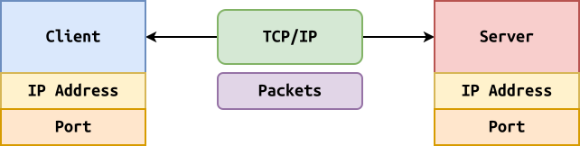
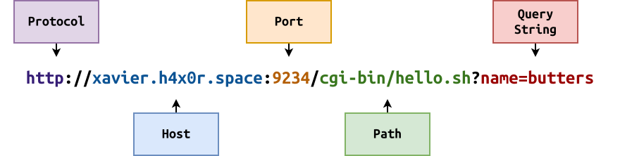
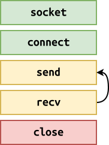
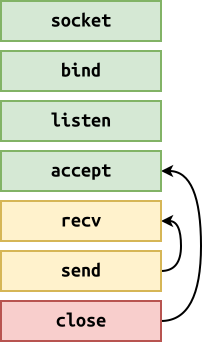

Logistics¶
-
Review: Looking Back, Moving Forward¶
-
What is networking?
-
What is an IP address?
-
What is a port?
-
What is a domain name?
-
What is a URL?
What is a protocol?
- What is an example?
Review: TCP/IP¶

-
To communicate over the network, client makes request to server.
-
Client needs to know IP address and port of Server (review).
-
Packets are sent between client and server, but may be lost (package analogy).
-
TCP is used to provide streaming abstraction with delivery control.
Review: URL¶

-
Web browser is the most common client (HTTP).
-
Use a URL to denote what resource we are requesting.
-
Protocol defines rules for communication.
-
Host indicates the server we want to contact.
-
Port specifies the service number we want to utilize.
-
Path tells server what resource we want.
-
Query String are arguments (example: google.com, query string).
Sockets: echo_client / echo_server¶
Client

Server

Echo Client¶
#!/usr/bin/env python3 import socket import sys # Constants BUFSIZ = (1<<10) # Parse command line arguments try: host = sys.argv[1] port = int(sys.argv[2]) except IndexError: print('Usage: echo_client.py host port', file=sys.stderr) sys.exit(1) # Connect to remote machine at host and port with socket.socket(socket.AF_INET, socket.SOCK_STREAM) as client: client.connect((host, port)) print(f'Connected to {host}:{port}') # Read from stdin, send to server, display response from server for line in sys.stdin: client.send(line.encode()) response = client.recv(BUFSIZ) print(response.decode(), end='')- client:
./echo_client.py localhost 9999 - server:
nc -l 9999
Echo Server¶
#!/usr/bin/env python3 import socket import sys # Constants BUFSIZ = (1<<10) # Parse command line arguments try: host = '127.0.0.1' port = int(sys.argv[1]) except IndexError: print('Usage: echo_server.py port', file=sys.stderr) sys.exit(1) # Connect to remote machine at host and port with socket.socket(socket.AF_INET, socket.SOCK_STREAM) as server: # Bind to port and begin listening server.bind((host, port)) server.listen() print(f'Listening on {host}:{port}') while True: # Accept a client client, address = server.accept() with client: print(f'Accepted connection from {address[0]}:{address[1]}') # Read from client and send it back while request := client.recv(BUFSIZ): print(request.decode(), end='') client.send(request)- client:
./echo_client.py localhost 9999 - server:
./echo_server.py 9999
-
-